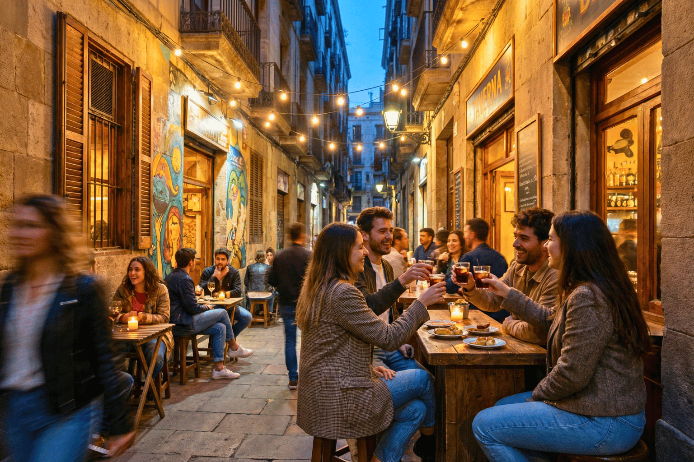
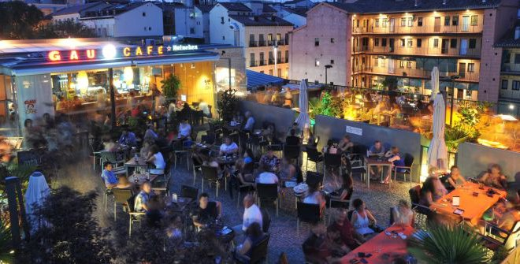
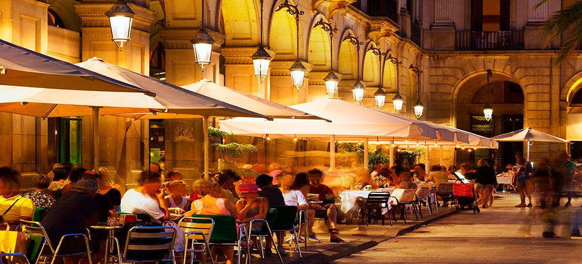

Wermut, długie obiady i dlaczego Hiszpanie nigdzie się nie spieszą
Hiszpanie mają jedno powiedzenie, które wydaje mi się genialne: no vivo para trabajar. Trabajo para vivir. Czyli… nie żyję, żeby pracować. Pracuję, żeby żyć.
Jeśli w pierwszej części wydawało Ci się, że Hiszpanie jedzą późno, poczekaj, aż doświadczysz hiszpańskiej soboty.
Pierwsze tygodnie w Hiszpanii bywają dla Środkowoeuropejczyka nieco mylące. O jedenastej przed południem zdaje Ci się, że to najwyższy czas coś robić.
Hiszpan w tym czasie dopiero siada na słońcu przed barem i zamawia wermut.
Nie, to nie obiad. I właściwie nawet nie przekąska. To… po prostu wermut.
Istnieje nawet wyrażenie „hacer el vermut", czyli dosłownie „iść na wermut".
Nie chodzi jednak tyle o sam napój, ile o rytuał towarzyski: schodzi się rodzina, przychodzą przyjaciele. Zamawia się coś małego do podjadania – oliwki, migdały, chipsy, berberechos (sercówki), anchois albo tapas.
Ktoś bierze wermut. Ktoś piwo. Ktoś coś bezalkoholowego.
Siedzi się. Rozmawia. Nikt nigdzie się nie spieszy.

Po wermucie często następuje spacer.
A potem obiad.
Jeśli jesteś przyzwyczajony do obiadu o dwunastej, w Hiszpanii poczujesz się trochę jak kosmita. W wielu rodzinach w weekend nie zaczyna się bowiem obiadu wcześniej niż o drugiej po południu, a bardzo często dopiero koło trzeciej.
I nie jest to szybki posiłek między dwoma obowiązkami.
Obiad to wydarzenie.
Zwykły rodzinny obiad ma zwykle kilka dań:
Najpierw „PRIMER PLATO". Może to być sałatka, warzywa, zupa, makaron, ryż lub inne lżejsze danie.
Następnie „SEGUNDO PLATO". Ryba. Mięso. Paella. Potrawy duszone. Zależnie od regionu i pory roku.
Do obiadu podaje się zwyczajowo wodę i wino.
Po daniu głównym przychodzi „POSTRE" – deser. Czasem owoce. Innym razem flan, natillas albo jakiś domowy słodki przysmak.
I oczywiście kawa. Mała, czarna, słodka.
Bez kawy obiad jakby się nawet nie kończył.

Jak pewnie się domyślasz, tego nie da się zjeść w pół godziny. Rodzinny obiad może trwać dwie, trzy, czasem nawet cztery godziny. I nikomu nie wydaje się to dziwne.
Wręcz przeciwnie.
To właśnie wspólnie spędzony czas jest najważniejszy.
Wieczorem życie toczy się dalej.
Zwłaszcza w ciepłych miesiącach ludzie wracają na ulice. Dzieci bawią się na placach. Rodziny spacerują. Bary i restauracje powoli się zapełniają.
Kiedy byłam w Hiszpanii po raz pierwszy, fascynowało mnie, ile małych dzieci spotyka się na dworze jeszcze późnym wieczorem: wózki, babcie, rodziny, grupki nastolatków.
Wszyscy na zewnątrz. Wszyscy razem.

Na kolację często wyrusza się dopiero po dziewiątej.
Zacząć kolację o dziesiątej wieczorem jest w wielu częściach Hiszpanii zupełnie normalne. Na południu szczególnie.
Restauracje mają kuchnię otwartą do późna w nocy i nikt nie dziwi się, że o jedenastej wieczorem zamawiasz danie główne.
A jest jeszcze jedna rzecz, którą w Hiszpanii lubię.
Ludzie wiedzą, że na ważne rzeczy trzeba znaleźć czas.
- Na rodzinę.
- Na przyjaciół.
- Na jedzenie.
- Na rozmowę.
- Na zwykłe spotkanie.
Nie twierdzę, że wszystko jest lepsze niż u nas. Ale ten spokojniejszy stosunek do czasu to coś, co fascynuje mnie w Hiszpanii już od ponad trzydziestu lat.
A im bardziej jedzie się na południe, tym wolniej zdaje się płynąć czas.
W Kadyksie zupełnie najbardziej. 😊